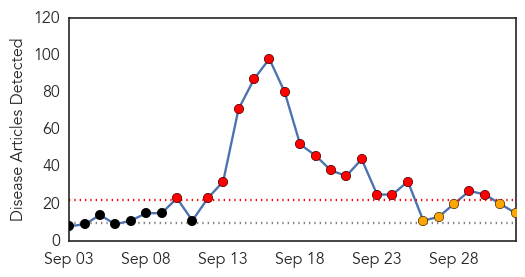
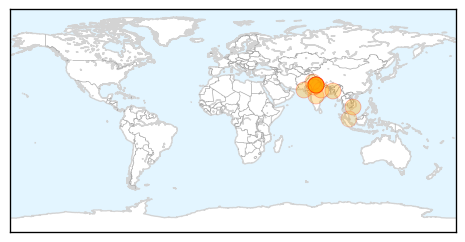
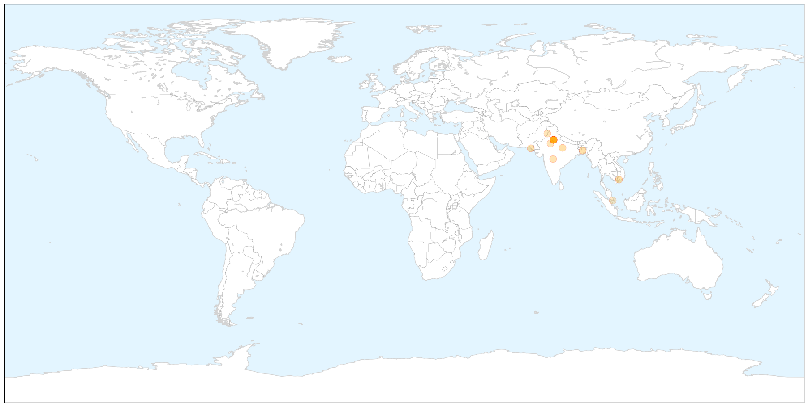
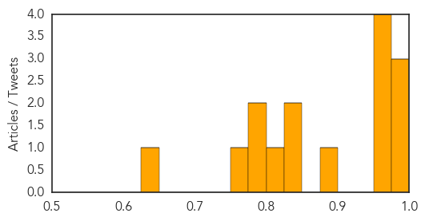
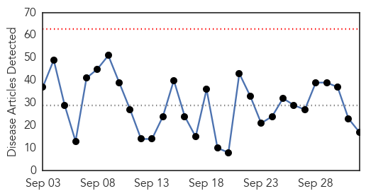
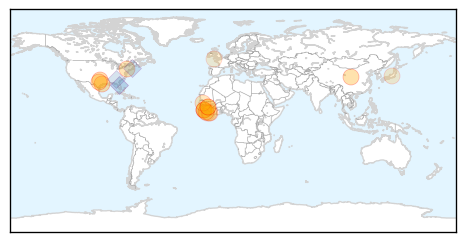
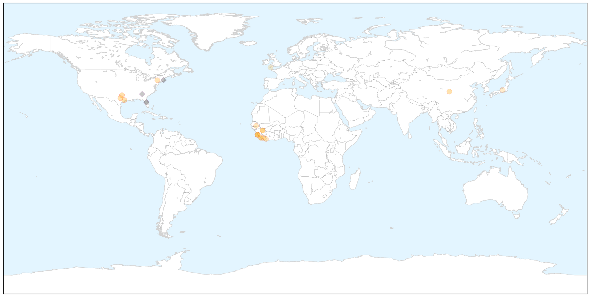
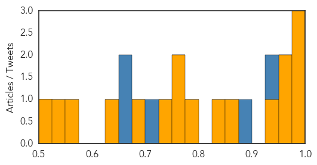

Dengue Fever
30-Day Web Trend
17 alerts, 5 warnings

30-Day Twitter Trend
3 alerts, 0 warnings

Article Locations

X

Article Confidences
Top Articles:
- 0.998
- Dengue patients in Vietnam overwhelm hospital for tropical diseases
- 0.990
- Dengue cases hit 9-yr high
- 0.988
- Dengue scare continues at Kotwa village - India
- 0.972
- Union Health Ministry takes stock of situation
- 0.970
- Dengue death is official only if patients die in select hospitals - India
- 0.964
- Dengue outbreak: Number of cases falling; barring rain, surge unlikely, say officials
- 0.957
- Dengue rings alarm bells in Rawalpindi
- 0.882
- Malaria scare hits International City in Dubai
- 0.841
- Chief secretary to supervise drive against dengue - Pakistan
- 0.827
- After the elder one, dengue takes life of 3-year-old brother
- 0.817
- Dengue breeding notices to Sanskriti, AIIMS
- 0.790
- Dengue crisis in Delhi: Notices to doctors
- 0.786
- Delhi government doctors get notices for dereliction of duty
- 0.774
- Government issues notice to doctors
- 0.650
- No proof that haze reduces dengue cases, Medical studies news, Health News, AsiaOne YourHealth
Top Tweets:
-
No tweets found for Oct 02, 2015
Ebola
30-Day Web Trend
0 alerts, 0 warnings

30-Day Twitter Trend
0 alerts, 0 warnings

Article Locations

X

Article Confidences
Top Articles:
- 0.999
- International Cooperation the Key to Stopping Ebola
- 0.986
- Testing of Russian Ebola vaccine on volunteers shows 'very good' results
- 0.982
- Kids with Ebola, bird flu or TB? Texas Children’s Hospital will be ready
- 0.970
- Sierra Leone counting down to Ebola freedom is long and costly
- 0.951
- Kids With Ebola, Bird Flu Or TB? Texas Children's Hospital Will Be Ready
- 0.934
- Texas Children's Hospital readies for kids with Ebola
- 0.874
- STOP WASHING DEAD BODIES!Palo Conteh Warns Western Area « Awoko Newspaper
- 0.849
- News Scan for Oct 01, 2015
- 0.791
- Sierra Leone News: Handicap Int’l Co-Founder meets VP Foh « Awoko Newspaper
- 0.772
- Training healthcare workers to save Liberia’s babies
- 0.772
- Midwifery Curriculum Review Meeting ends in Freetown
- 0.748
- Ellen wants health, human security prioritized
- 0.686
- Halyard Health : Supporting MedShare International
- 0.650
- Guinea's National Day
- 0.574
- Nyenswah tells world ‘Liberia has effectively beaten Ebola’
- 0.526
- Ebola patient’s son: Mom is getting better
- 0.519
- Royal Navy medal haul for ebola mission to Sierra Leone
Top Tweets:
- 0.927
- RT: NEWS SCAN: Ebola in Guinea health workers HPV vax against genital warts flu shots in schoolkids flu A vs flu B http://t.co/U…
- 0.893
- Sierra Leone: Frontline Nurses In Aftermath of Ebola Outbreak Battle ... - Huffington Post http://t.co/xZi5s8jDnL ebola EVD
- 0.706
- .@HaertlG -- did the Ebola Emergency Committee's report come out?
- 0.654
- Ebola Virus Disease in HealthCareWorkers — Guinea 2014 http://t.co/jXE9c4DdZJ
- 0.653
- RT: About 850000 people were trained on latest Ebola guidance such as infection control and entry/ exit screening. http://…